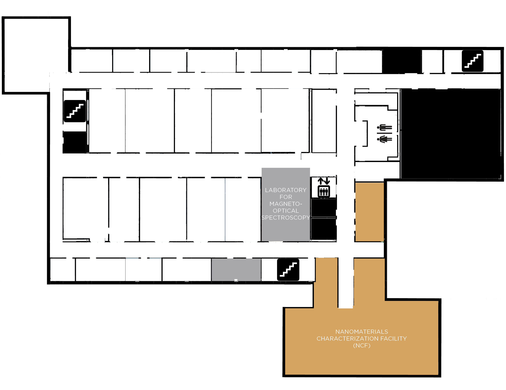
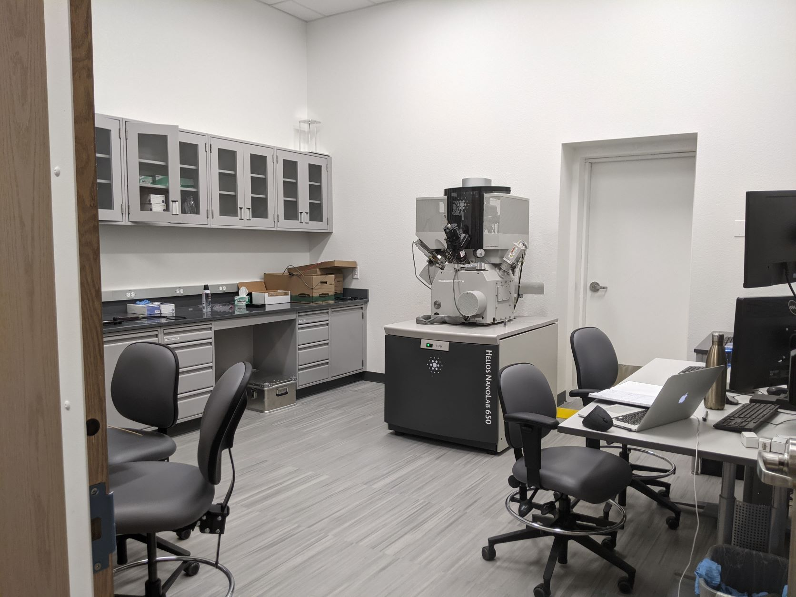
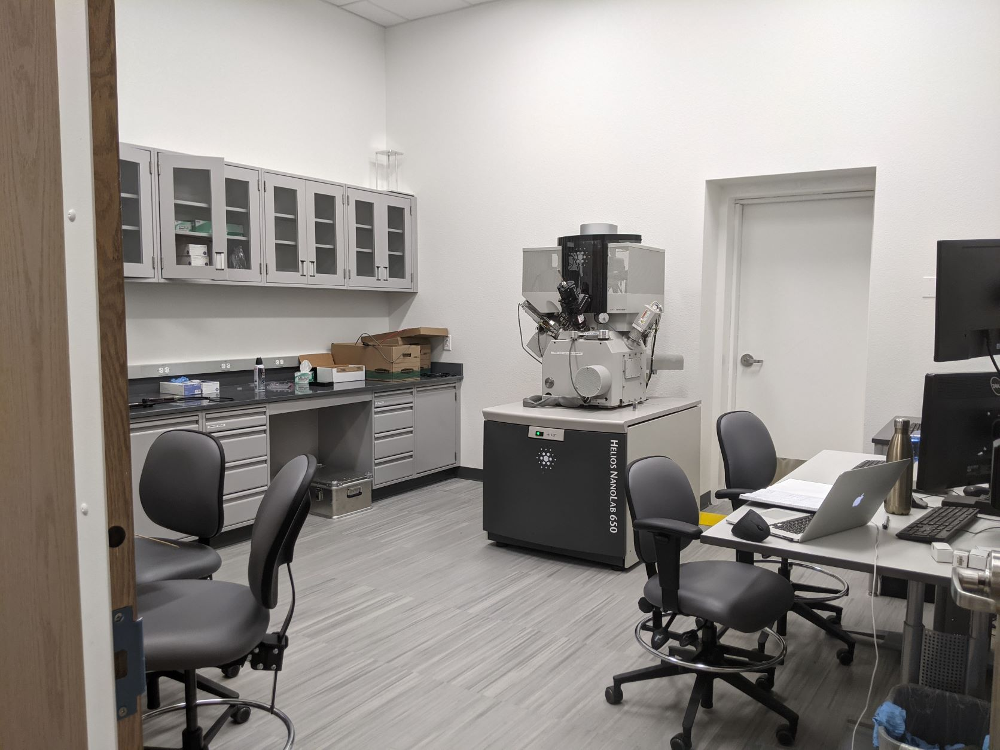

Welcome to the UNM Interdisciplinary Science Cooperative’s Virtual Open House. Until we can safely invite you
into our space within PAÍS we hope that this virtual experience not only teaches you about how our
collaborative is supporting our University’s research mission but also gives you a firsthand look at our state-of-the art facility.
Throughout the month of October, please take time to explore each of our Centers and laboratories, as well as our projects and fellowship.
If you are interested in getting involved in our Team Research Symposium this spring or any of our other upcoming activities, please contact Irene.
CLICK THE TABS BELOW TO TRAVEL THROUGH THE FLOORS OF PAÍS.
ONCE YOU ARE ON YOUR SELECTED
FLOOR, CLICK ON THE COLORED SPACES WITHIN THE FLOOR PLAN TO LEARN MORE ABOUT THEM.

Led by director Jeffrey Rack, PhD, the Laboratory for Magneto-optical Spectroscopy is one of a very few number of laboratories world-wide that can make broad-band steady state and time-resolved magneto-optical measurements. This technology promises to reveal electronic and magnetic details from a wide variety of commercially relevant photoactive materials.
By utilizing their expertise in spectroscopy with their chemical knowledge, the lab is uniquely positioned to not only make sophisticated measurements from the femtosecond to microsecond,
but to also create tailored materials to optimize and exploit specific chemical interactions. Materials that show large magneto-optical responses are employed in high-technology optical switches and novel optical materials in a variety of applications. The lab’s instruments can even detect UV to the near infrared (N-IR).


As the only academic facility of its kind in New Mexico, the Nanomaterials Characterization Facility (NCF) provides a vital resource to researchers throughout the state. The instruments in this lab are capable of X-ray diffraction, scanning electron microscopy, focused ion beam techniques and transmission electron microscopy in order to analyze the chemistry and structure of a variety of synthetic and natural materials. Through multiple collaborations throughout the state, the NCF is able to study everything from minerals found from NASA and JAXA space missions to semiconductors and other man-made materials that support our modern day living.
 
